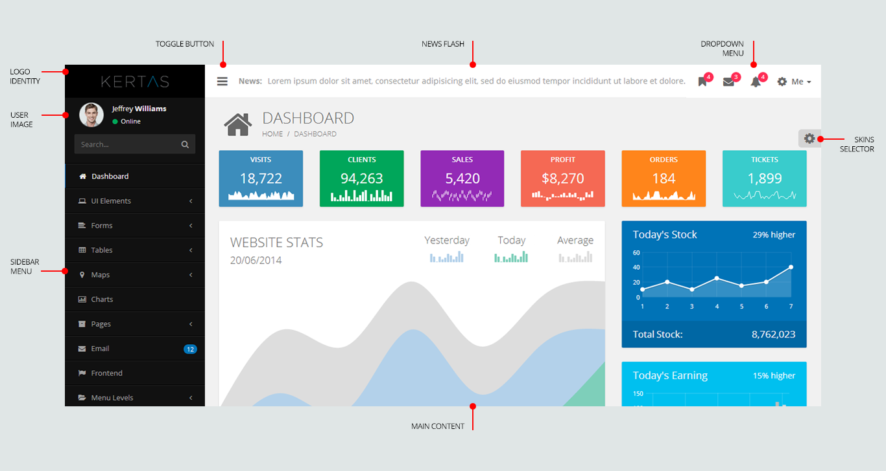

Thank you for purchasing our template. If you have any questions that are beyond the scope of this help file, please feel free to e-mail our support at vergolabs@gmail.com. Thanks so much!
This theme is built on a responsive Bootstrap 3 framework. As show in the picture, the template consist of:

Header – Consist of logo identity, toggle button, news flash, and dropdown menu
Sidebar – Consist of user image and details and main menu
Main Content – Consist of admin content
In downloaded package you'll find "html" folder, which contains main theme files: HTML files and Assets folder. In Assets folder contains css, image, javascript, and plugins file.
html/ ├── assets/ │ ├── css/ │ ├── img/ │ ├── js/ │ ├── plugins/
Main CSS files located in assets/css
Main JS files located in assets/js
In total there are 37 main theme .html files:
All these html files have certain html blocks in their source code. All the html blocks are clearly commented out and should be easy to spot. Each HTML file contains left navigation sidebar. The main structure of a typical page would be:
<!-- BEGIN HEADER -->
<header class="header">
<!-- BEGIN NAVBAR -->
<nav class="navbar navbar-static-top" role="navigation"></nav>
<!-- END NAVBAR -->
</header>
<!-- END HEADER -->
<div class="wrapper row-offcanvas row-offcanvas-left">
<!-- BEGIN SIDEBAR -->
<aside class="left-side sidebar-offcanvas"></aside>
<!-- END SIDEBAR -->
<!-- BEGIN CONTENT -->
<aside class="right-side">
<!-- BEGIN CONTENT HEADER -->
<section class="content-header"></section>
<!-- END CONTENT HEADER -->
<!-- BEGIN MAIN CONTENT -->
<section class="content"></section>
<!-- END MAIN CONTENT -->
</aside>
<!-- END CONTENT -->
<!-- BEGIN SCROLL TO TOP -->
<div class="scroll-to-top"></div>
<!-- END SCROLL TO TOP -->
</div>
To change skin, you need to replace skin class in body tag:
<body class="skin-dark"> ... </body>
Available skins:
skin-dark, skin-gray, skin-light, skin-blue, skin-green, skin-turquoise, skin-purple, skin-red, skin-orange, and skin-yellow
If you want to remove skins selector in your page, delete this tag:
<script src="assets/js/skin-selector.js"></script>
In total there are 2 css files:
Inside HTML page header, include main.css and skins.css file:
<link rel="stylesheet" href="assets/css/main.css"> <link rel="stylesheet" href="assets/css/skins.css">
We used Open Sans font from Google Font Library. To replace the font, open main.css and change the Google Font url in line 8:
@import url(http://fonts.googleapis.com/css?family=Open+Sans:400,300,600,700);
Then change font-family value in line 14:
font-family: 'Open Sans', sans-serif;
All CSS files are well commented, so you can easily find and edit any class in any CSS file.
In total there are 10 JS files:
In general each HTML page loads only required .js files. In your project you can minify all these files into 1 or do anything you want, but in download package we included all files so you can easily add/edit/remove new files. Include JS file in bottom page, so page will load faster.
<script src="assets/js/main.js"></script>
If you want to remove skins selector in your page, delete this tag:
<script src="assets/js/skin-selector.js"></script>
All JS files are well commented, so you can easily find and edit any code in any JS file.
Below is the list of all plugins and external resources used in this template.
| PLUGIN NAME | VERSION | DESCRIPTION | URL |
|---|---|---|---|
| jQuery | 2.1.0 | jQuery is a fast, small, and feature-rich JavaScript library. | http://jquery.com/ |
| jQuery UI | 1.10.4 | jQuery UI is a curated set of user interface interactions, effects, widgets, and themes built on top of the jQuery JavaScript Library. | http://jqueryui.com |
| Bootstrap | 3.1.1 | Bootstrap is the most popular HTML, CSS, and JS framework for developing responsive, mobile first projects on the web. | http://getbootstrap.com/ |
| Bootstrap Color Picker | 2.0 | Colorpicker plugin for the Twitter Bootstrap toolkit. | http://mjolnic.github.io/bootstrap-colorpicker/ |
| Bootstrap DateTime Picker | unknown | Both Date and Time picker widget based on twitter bootstrap (supports Bootstrap v2 and v3). | http://www.malot.fr/bootstrap-datetimepicker/ |
| Bootstrap Slider | 2.0.0 | Slider for Twitter Bootstrap | http://www.eyecon.ro/bootstrap-slider/ |
| Bootstrap Summernote | 0.5.2 | Super simple WYSIWYG editor on Bootstrap. | http://hackerwins.github.io/summernote/ |
| Bootstrap Wizard | 1.0 | This Twitter Bootstrap plugin builds a wizard using a formatted tabbable structure. | https://github.com/VinceG/twitter-bootstrap-wizard/ |
| CodeMirror | 4.3 | CodeMirror is a versatile text editor implemented in JavaScript for the browser. | http://codemirror.net/ |
| Dropzone | 3.10.2 | Dropzone.js is a light weight JavaScript library that turns an HTML element into a dropzone. | https://github.com/enyo/dropzone/ |
| Font Awesome | 4.1.0 | Font Awesome gives you scalable vector icons that can instantly be customized – size, color, drop shadow, and anything that can be done with the power of CSS. | http://fontawesome.io/ |
| FullCalendar | 2.0.0 | FullCalendar is a jQuery plugin that provides a full-sized, drag & drop calendar. | http://arshaw.com/fullcalendar/ |
| GMaps | 0.4.12 | gmaps.js allows you to use the potential of Google Maps in a simple way. | http://hpneo.github.com/gmaps/ |
| iCheck | 1.0.2 | Powerful jQuery and Zepto plugin for checkboxes and radio buttons customization. | https://github.com/fronteed/iCheck/ |
| jQuery BlockUI | 2.66.0 | The jQuery BlockUI Plugin lets you simulate synchronous behavior when using AJAX, without locking the browser. | http://malsup.com/jquery/block/ |
| jQuery DataTables | 1.10.0 | DataTables is a powerful jQuery plugin for creating table listings and adding interactions to them. | http://www.datatables.net/ |
| jQuery Flot | 0.8.3 | Flot is a pure JavaScript plotting library for jQuery, with a focus on simple usage, attractive looks and interactive features. | http://www.flotcharts.org/ |
| jQuery Gritter | 1.7.4 | A small growl-like notification plugin for jQuery. | https://github.com/jboesch/Gritter/ |
| jQuery jVectorMap | 1.2.2 | jVectorMap is a jQuery plugin employed to show vector maps and visualize data on HTML pages. | http://jvectormap.com/ |
| jQuery Knob | 1.2.8 | Nice, downward compatible, touchable, jQuery dial. | https://github.com/aterrien/jQuery-Knob |
| jQuery Magnific Popup | 0.9.9 | Magnific Popup is a responsive lightbox & dialog script with focus on performance and providing best experience for user with any device. | http://dimsemenov.com/plugins/magnific-popup/ |
| jQuery MaskedInput | 1.3.1 | Masked Input plugin for jQuery | http://digitalbush.com/projects/masked-input-plugin/ |
| jQuery Nestable | unknown | Drag & drop hierarchical list with mouse and touch compatibility. | https://github.com/dbushell/Nestable/ |
| jQuery NiftyModal | unknown | A set of experimental modal window appearance effects with CSS transitions and animations. | https://github.com/codrops/ModalWindowEffects/ |
| jQuery Resize | 1.1 | With jQuery resize event, you can now bind resize event handlers to elements other than window, for super-awesome-resizing-greatness. | http://benalman.com/projects/jquery-resize-plugin/ |
| jQuery Sparkline | 2.1.2 | Generates inline sparkline charts from data supplied either to the method or inline in HTML | http://omnipotent.net/jquery.sparkline/ |
| jQuery Totem Ticker | unknown | Totem is a jQuery plugin that turns lists into animated vertical tickers. | https://github.com/buildinternet/totem/ |
| jQuery Validation | 1.12.0 | This jQuery plugin makes simple clientside form validation easy, whilst still offering plenty of customization options. | http://jqueryvalidation.org/ |
| Pace | 0.5.1 | Automatic page load progress bar | http://github.hubspot.com/pace/ |
| Select2 | 3.5.0 | Select2 is a jQuery based replacement for select boxes. It supports searching, remote data sets, and infinite scrolling of results. | http://ivaynberg.github.io/select2/ |
| Skycons | unknown | Skycons is a set of ten animated weather glyphs, procedurally generated by JavaScript using the HTML5 canvas tag. | http://darkskyapp.github.io/skycons/ |
| Switchery | 0.6.0 | Switchery is a simple component that helps you turn your default HTML checkbox inputs into beautiful iOS 7 style switches in just few simple steps. | http://abpetkov.github.io/switchery/ |
One-page HTML landing page.
To fix this issue, you have to just copy the exact code snippet below into your website’s .htaccess file.
<FilesMatch ".(ttf|otf|eot|woff)$"> <IfModule mod_headers.c> Header set Access-Control-Allow-Origin "*" </IfModule> </FilesMatch>
For more information, visit this site.
I've used the following images, icons or other files as listed.
Background: http://graphicburger.com/
Cover: http://picjumbo.com/
Gallery: http://www.gratisography.com/
Photos: http://www.freedigitalphotos.net/
Plugin: see Plugin
Version 1.0.0
Initial Release
Once again, thank you so much for purchasing this template. We’ll be glad to help you if you have any questions relating to this template. No guarantees, but we'll do our best to assist. We are always there to help, drop us a message at vergolabs@gmail.com.
VergoLabs